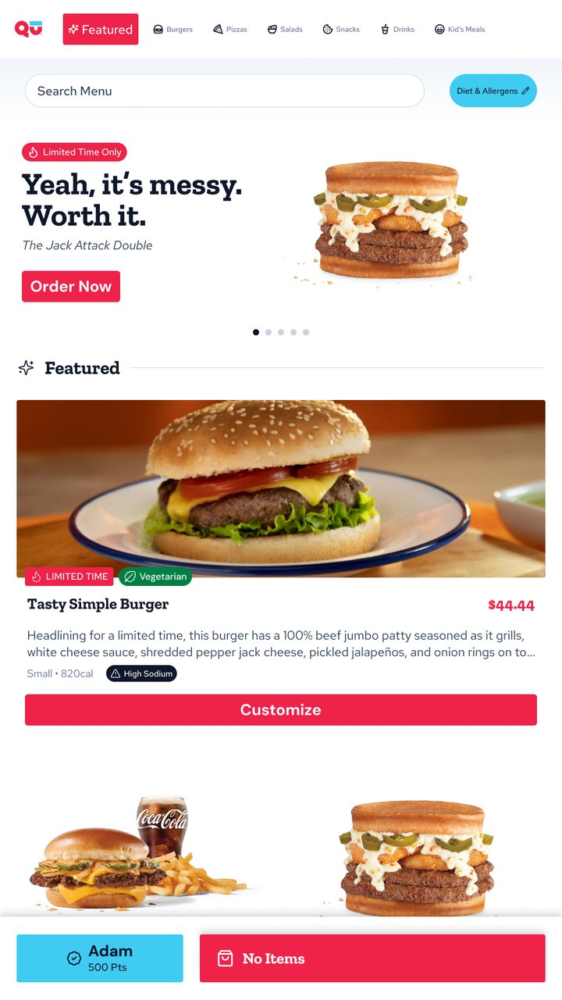
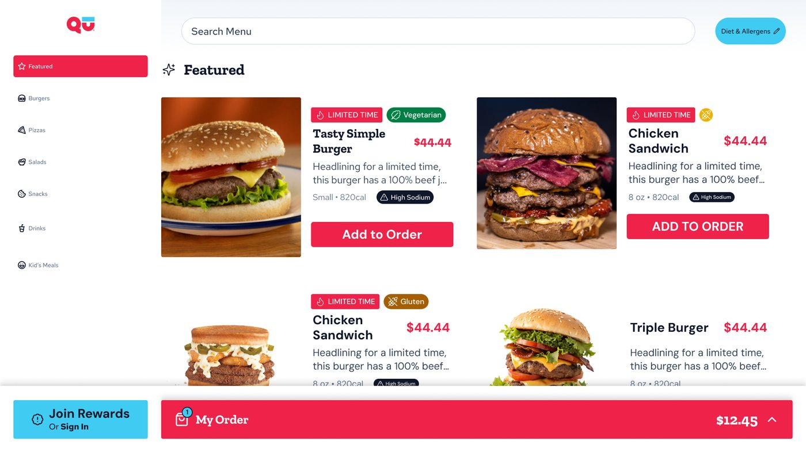

1
One layout logic, two orientations
Portrait uses top tabs and a promo banner; landscape uses a category sidebar. The order bar stays fixed at the bottom in both.
TradeoffA single layout would have been cheaper to build but would waste space in one orientation. We maintained two navigation patterns so the menu reads naturally on each screen.

